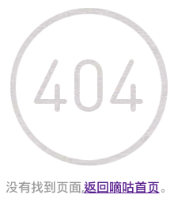

-
嘀咕网微博一键备份/清空
时间: 05/10/2011
简介: 通过简单的 API 调用和 XML 解析实现嘀咕网微博客一键备份和一键清空。
链接地址: https://kelvin-mirex-svn.googlecode.com/files/DiguQuit_src%28c%23%29.zip
twitter是我知道的第一个微博客，饭否是我用的第一个微博客(since:2007-08-18 21:52)，并且一直在用。直到某年某月某日，后来的很长一段时间没用过微博客，直到不小心点到了嘀咕网，接下去的很长一段时间我开始使用嘀咕(那时还没新浪微博呢)，在嘀咕也认识了很多好朋友，其中有些在我低迷的时候给我很多帮助，非常感谢TA们，再后来有天莫名其妙被关进小黑屋，原因是有敏感信息，真受不了那帮大爷们，后来有天我写了这个小工具，带走了所有微博，离开了嘀咕。
刚又一次在地址栏输入digu dot com slash my id，我以为一切会陌生又熟悉，结果的：只有陌生，这个url已经不是指向我的timeline了，嘀咕已经完全改版了，准确地说，换了，从一个微博客变成了Pinterest类网站，似乎我的id已经被删除了，我尝试用老帐号登录，提示注册成功！呵。呵。 